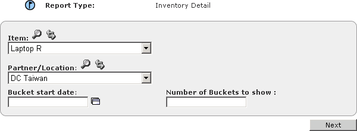

Creating Inventory Detail Reports
Inventory Detail reports shows inventory information about one inventory Item at one Location over a defined set of time buckets.
To create an
Inventory Detail
report
1 In the Function drop-down list, select Business User.
2 Click the Reports tab.
3 Click On-Demand Reports.
4 In the Report Type drop-down list box, select Inventory Detail, then click Go. The
Inventory Detail report definition page appears.

5 Enter or select the data for the report:
4 Click Next.
The report appears on a page with 2 sections. The top section summarizes the report options. The bottom section shows beginning and ending inventory, scheduled and planned inflows and planned outflows, and safety stock for all time buckets for that inventory item at that location.
Note: You can export the report to a comma-separated value (.CSV) text file. See
"Exporting Reports".